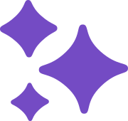
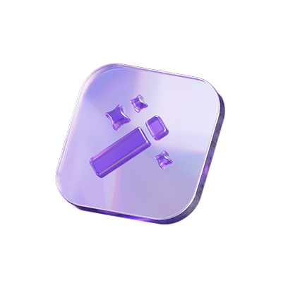
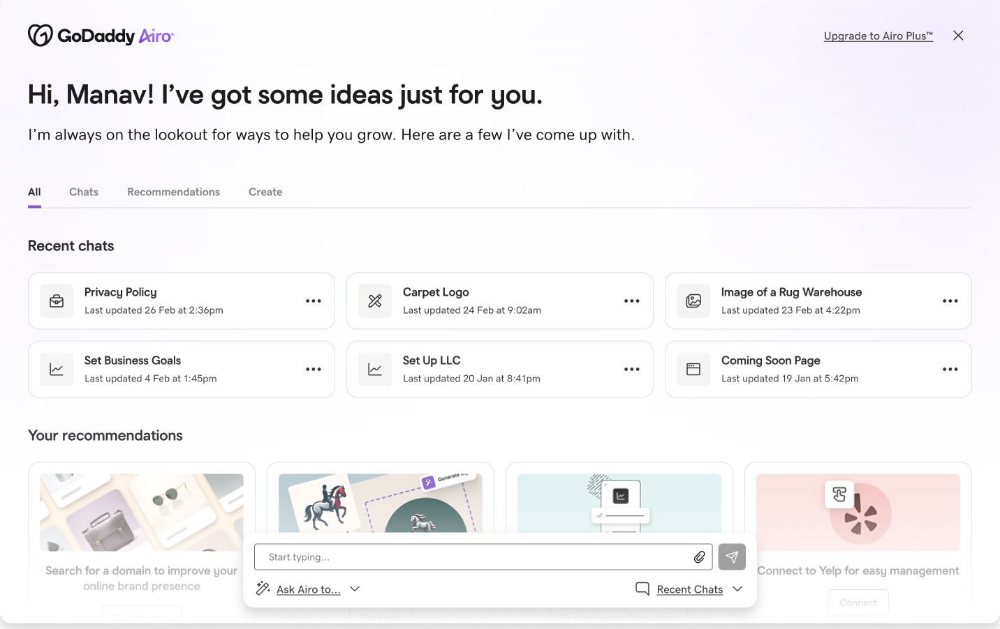
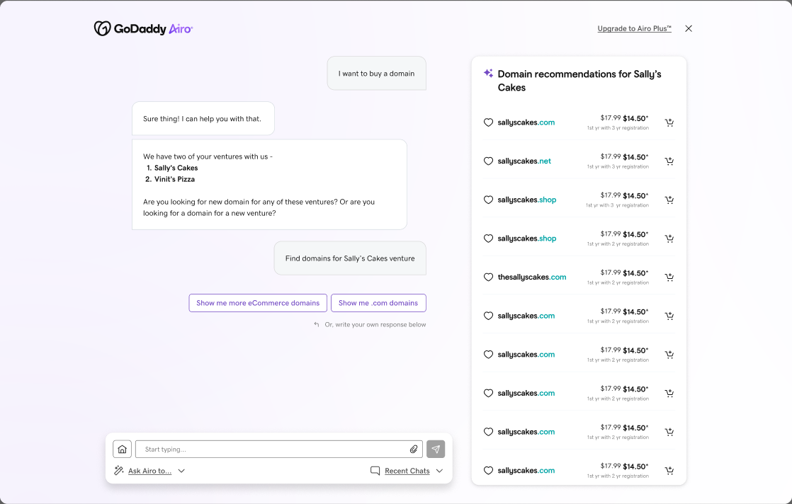
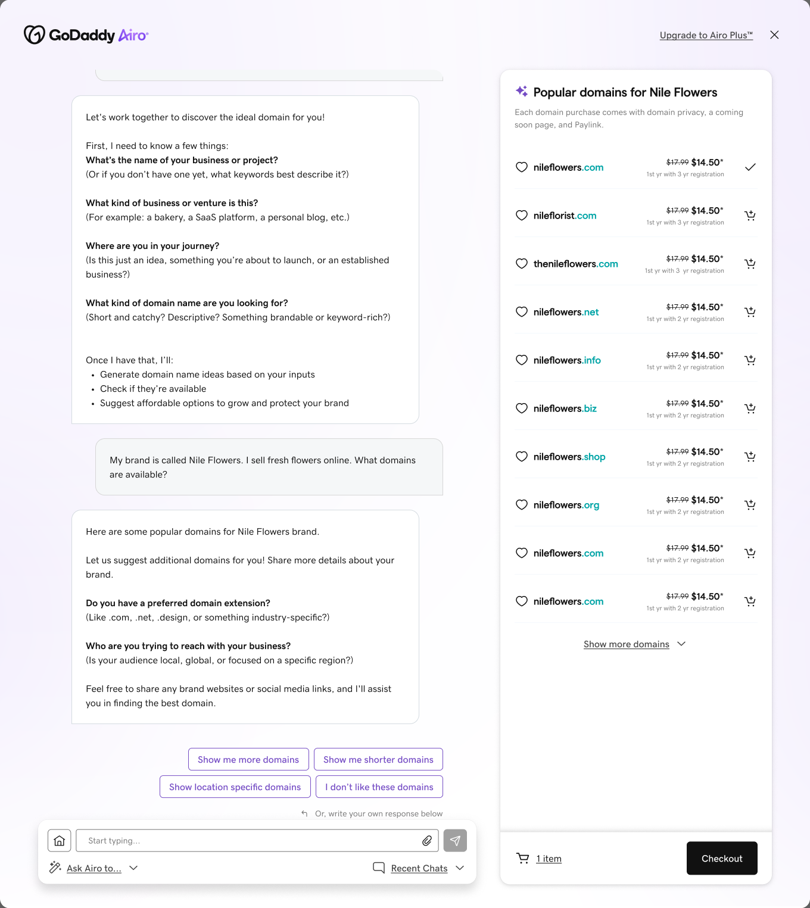
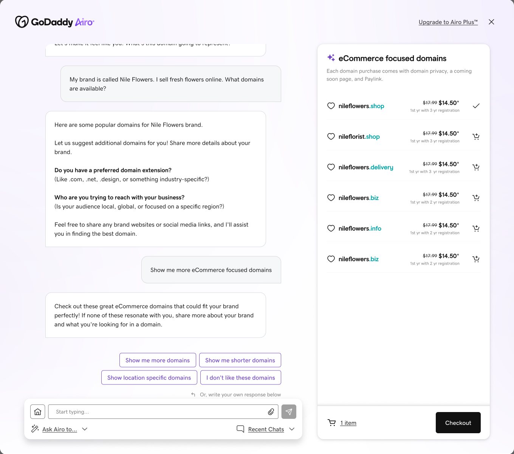
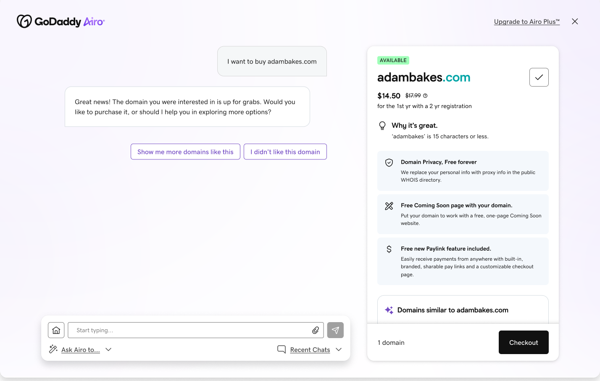
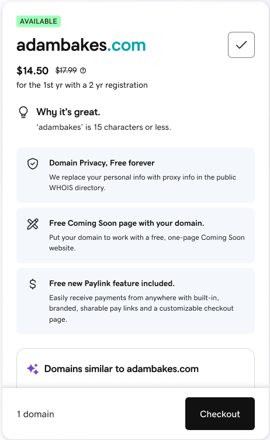
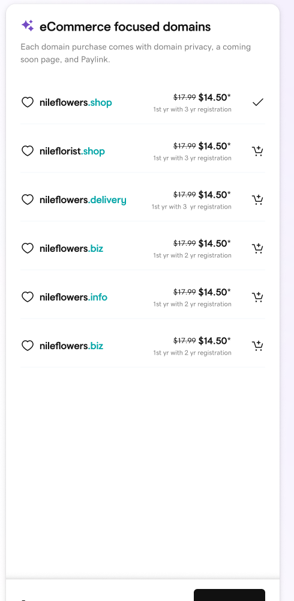
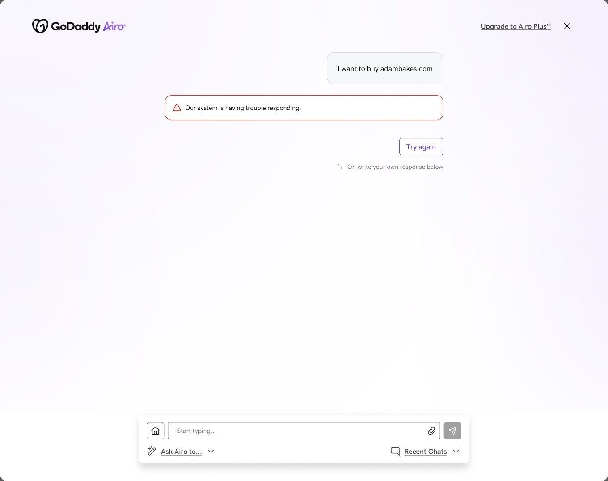

Conversation
to understand intent.
Use natural language when the customer’s goal is still fluid.
Domain Search & Registration Agent · 2025
I designed an AI-guided experience that interprets an early business idea, recommends relevant domains, and helps customers move confidently toward registration.
CONTEXT
AN ECOSYSTEM OF AGENTS
GoDaddy was evolving Airo into a coordinated system of specialized agents. Airo maintained customer context and directed work to the right product expert.
My focus was defining how the Domain Agent should understand intent, present recommendations, and support a purchase—without becoming an interrogation or an endless chat.

JOURNEY ENTRY

Customers enter through the shared Airo home before the Domain Agent takes on the specialized task.

THE DESIGN CHALLENGE
The same request could come from a first-time founder, an established business, or someone adding a new venture. The agent needed enough context to be relevant—while minimizing questions and preserving control.
I want to buy a domain.
STRATEGY
THE INTERACTION MODEL
Use natural language when the customer’s goal is still fluid.
Move names, extensions, availability, and price into a scannable surface.
Reduce uncertainty as the customer moves from exploration to commitment.
DESIGN DECISION · 01
When Airo already knew about a customer’s ventures, the agent surfaced them as editable choices. Customers could confirm an existing business or start something new without repeating information.
Ask customers to verify known context—not recreate it.

DESIGN DECISION · 02
For a new venture, the agent asked only what would improve the next recommendation. Each answer became a visible signal—not information disappearing into an opaque model.
Every question should improve what comes next.

DESIGN DECISION · 03
Conversation remained the place to express preferences. A dedicated results surface made domain names, extensions, availability, and pricing easier to evaluate.

One continuous task. Two coordinated surfaces.
A DECISION, NOT JUST A LIST

RESPONSIVE PRODUCT DESIGN
The same hierarchy carried into narrower surfaces: the recommendation remained scannable, the value proposition stayed close to the domain, and the next action remained within reach.


THE PROTOTYPE
The full prototype brings the agent’s conversation, recommendation surface, and refinement loop together in one continuous journey.
DESIGNING THE WHOLE EXPERIENCE
Waiting, refinement, recovery, and handoff were treated as part of the core journey—not edge cases. When the system could not respond, the experience explained what happened and kept retry close at hand.

OUTCOME
The work established a clear pattern for AI-assisted commerce: use conversation while intent is fluid, introduce structure when comparison begins, and preserve context through every transition.
Designing the agent was less about making chat feel intelligent—and more about deciding when the interface should listen, guide, reveal structure, or get out of the way.